Last updated: 2021-06-02
Checks: 5 1
Knit directory: Collaborations/
This reproducible R Markdown analysis was created with workflowr (version 1.2.0). The Report tab describes the reproducibility checks that were applied when the results were created. The Past versions tab lists the development history.
The R Markdown file has unstaged changes. To know which version of the R Markdown file created these results, you’ll want to first commit it to the Git repo. If you’re still working on the analysis, you can ignore this warning. When you’re finished, you can run wflow_publish to commit the R Markdown file and build the HTML.
Great job! The global environment was empty. Objects defined in the global environment can affect the analysis in your R Markdown file in unknown ways. For reproduciblity it’s best to always run the code in an empty environment.
The command set.seed(20210523) was run prior to running the code in the R Markdown file. Setting a seed ensures that any results that rely on randomness, e.g. subsampling or permutations, are reproducible.
Great job! Recording the operating system, R version, and package versions is critical for reproducibility.
Nice! There were no cached chunks for this analysis, so you can be confident that you successfully produced the results during this run.
Great! You are using Git for version control. Tracking code development and connecting the code version to the results is critical for reproducibility. The version displayed above was the version of the Git repository at the time these results were generated.
Note that you need to be careful to ensure that all relevant files for the analysis have been committed to Git prior to generating the results (you can use wflow_publish or wflow_git_commit). workflowr only checks the R Markdown file, but you know if there are other scripts or data files that it depends on. Below is the status of the Git repository when the results were generated:
Ignored files:
Ignored: .Rhistory
Untracked files:
Untracked: analysis/cld1.Rdata
Untracked: analysis/cld3dPregTemp.Rdata
Untracked: cld1.Rdata
Untracked: cld3dPregTemp.Rdata
Unstaged changes:
Modified: analysis/LCLDA.Rmd
Note that any generated files, e.g. HTML, png, CSS, etc., are not included in this status report because it is ok for generated content to have uncommitted changes.
These are the previous versions of the R Markdown and HTML files. If you’ve configured a remote Git repository (see ?wflow_git_remote), click on the hyperlinks in the table below to view them.
| File | Version | Author | Date | Message |
|---|---|---|---|---|
| html | b60ca2e | han16 | 2021-05-28 | 5/28/2021 |
| Rmd | a9361c8 | han16 | 2021-05-23 | 05/23/2021 |
| html | a9361c8 | han16 | 2021-05-23 | 05/23/2021 |
Review R for latent class growth analysis (LCGA) and/or growth mixture models (GMMs).
lcmm R package can fit both GMM and LCGA
it handles both continuous longitudinal outcomes (Gaussian or non-Gaussian) as well as bounded quantitative, discrete and ordinal longitudinal outcomes
program also works when no random-effect is included
As in Laird and Ware (1982), define linear mixed model
\[Y_{ij}=X_{Li}(t_{ij})^T\beta+Z_i(t_{ij})^Tu_i+w_i(t_{ij})+\epsilon_{ij}\]
Aim: to estimate \((\beta, vec(B), \sigma_{\epsilon}^2, \sigma_w^2)\).
Define it without measurement error
\[\Lambda_{i}(t)=X_{Li}(t)^T\beta+Z_i(t)^Tu_i+w_i(t)\] to define a flexible nonlinear measurement error model
\[Y_{ij}=H(\Lambda_i(t_{ij})+\epsilon_{ij}, \eta)\] \(H\) is a paramerized link function and for a quantitative marker, \(H^{-1}\) could be a monotone increasing function.
This example is from here
library(lcmm)
#### Estimation of homogeneous mixed models with different assumed link
#### functions, a quadratic mean trajectory for the latent process and
#### correlated random intercept and slope (the random quadratic slope
#### was removed as it did not improve the fit of the data).
#### -- comparison of linear, Beta and 3 different splines link functions --
# linear link function
m10<-lcmm(Ydep2~Time+I(Time^2),random=~Time,subject='ID',ng=1,
data=data_lcmm,link="linear")Be patient, lcmm is running ...
The program took 1.29 seconds summary(m10)General latent class mixed model
fitted by maximum likelihood method
lcmm(fixed = Ydep2 ~ Time + I(Time^2), random = ~Time, subject = "ID",
ng = 1, link = "linear", data = data_lcmm)
Statistical Model:
Dataset: data_lcmm
Number of subjects: 300
Number of observations: 1678
Number of latent classes: 1
Number of parameters: 7
Link function: linear
Iteration process:
Convergence criteria satisfied
Number of iterations: 10
Convergence criteria: parameters= 6.4e-08
: likelihood= 1.3e-05
: second derivatives= 5.4e-13
Goodness-of-fit statistics:
maximum log-likelihood: -4064.97
AIC: 8143.94
BIC: 8169.87
Discrete posterior log-likelihood: -4035.53
Discrete AIC: 8085.06
Mean discrete AIC per subject: 13.4751
Mean UACV per subject: 13.4786
Mean discrete LL per subject: -13.4518
Maximum Likelihood Estimates:
Fixed effects in the longitudinal model:
coef Se Wald p-value
intercept (not estimated) 0
Time -0.77541 0.18949 -4.092 0.00004
I(Time^2) -0.18472 0.07578 -2.438 0.01478
Variance-covariance matrix of the random-effects:
intercept Time
intercept 0.29660
Time 0.19106 0.91884
Residual standard error (not estimated) = 1
Parameters of the link function:
coef Se Wald p-value
Linear 1 (intercept) 25.40487 0.22614 112.340 0.00000
Linear 2 (std err) 2.23846 0.04444 50.367 0.00000# Beta link function
m11<-lcmm(Ydep2~Time+I(Time^2),random=~Time,subject='ID',ng=1,
data=data_lcmm,link="beta")Be patient, lcmm is running ...
The program took 1.8 seconds summary(m11)General latent class mixed model
fitted by maximum likelihood method
lcmm(fixed = Ydep2 ~ Time + I(Time^2), random = ~Time, subject = "ID",
ng = 1, link = "beta", data = data_lcmm)
Statistical Model:
Dataset: data_lcmm
Number of subjects: 300
Number of observations: 1678
Number of latent classes: 1
Number of parameters: 9
Link function: Standardised Beta CdF
Iteration process:
Convergence criteria satisfied
Number of iterations: 7
Convergence criteria: parameters= 8.5e-08
: likelihood= 4.6e-06
: second derivatives= 9.4e-12
Goodness-of-fit statistics:
maximum log-likelihood: -3998.69
AIC: 8015.39
BIC: 8048.72
Discrete posterior log-likelihood: -3991.42
Discrete AIC: 8000.85
Mean discrete AIC per subject: 13.3347
Mean UACV per subject: 13.3289
Mean discrete LL per subject: -13.3047
Maximum Likelihood Estimates:
Fixed effects in the longitudinal model:
coef Se Wald p-value
intercept (not estimated) 0
Time -0.87803 0.19004 -4.620 0.00000
I(Time^2) -0.10269 0.07663 -1.340 0.18022
Variance-covariance matrix of the random-effects:
intercept Time
intercept 0.55149
Time 0.21239 0.6301
Residual standard error (not estimated) = 1
Parameters of the link function:
coef Se Wald p-value
Beta1 0.54413 0.06827 7.971 0.00000
Beta2 -0.76244 0.09124 -8.356 0.00000
Beta3 0.70397 0.01668 42.200 0.00000
Beta4 0.08959 0.00436 20.533 0.00000plot(m11,which="linkfunction",bty="l")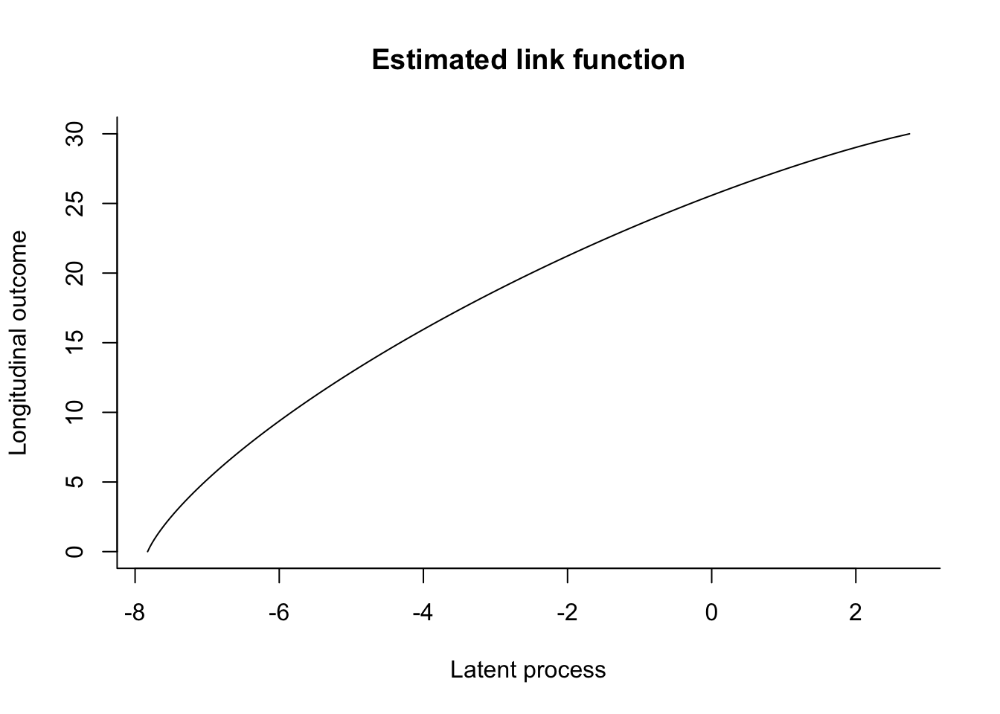
# I-splines with 3 equidistant nodes
m12<-lcmm(Ydep2~Time+I(Time^2),random=~Time,subject='ID',ng=1,
data=data_lcmm,link="3-equi-splines")Be patient, lcmm is running ...
The program took 2.47 seconds summary(m12)General latent class mixed model
fitted by maximum likelihood method
lcmm(fixed = Ydep2 ~ Time + I(Time^2), random = ~Time, subject = "ID",
ng = 1, link = "3-equi-splines", data = data_lcmm)
Statistical Model:
Dataset: data_lcmm
Number of subjects: 300
Number of observations: 1678
Number of latent classes: 1
Number of parameters: 10
Link function: Quadratic I-splines with nodes
0 15 30
Iteration process:
Convergence criteria satisfied
Number of iterations: 23
Convergence criteria: parameters= 2.2e-05
: likelihood= 5.4e-05
: second derivatives= 6.9e-09
Goodness-of-fit statistics:
maximum log-likelihood: -4001.28
AIC: 8022.56
BIC: 8059.6
Discrete posterior log-likelihood: -3987.12
Discrete AIC: 7994.25
Mean discrete AIC per subject: 13.3237
Mean UACV per subject: 13.3172
Mean discrete LL per subject: -13.2904
Maximum Likelihood Estimates:
Fixed effects in the longitudinal model:
coef Se Wald p-value
intercept (not estimated) 0
Time -0.88945 0.19004 -4.680 0.00000
I(Time^2) -0.09774 0.07662 -1.276 0.20206
Variance-covariance matrix of the random-effects:
intercept Time
intercept 0.56771
Time 0.21876 0.61783
Residual standard error (not estimated) = 1
Parameters of the link function:
coef Se Wald p-value
I-splines1 -7.86160 0.53453 -14.707 0.00000
I-splines2 0.92439 0.29168 3.169 0.00153
I-splines3 1.48732 0.17299 8.598 0.00000
I-splines4 2.03434 0.07782 26.140 0.00000
I-splines5 1.80953 0.04665 38.789 0.00000# I-splines with 5 nodes at quantiles
m13<-lcmm(Ydep2~Time+I(Time^2),random=~Time,subject='ID',ng=1,
data=data_lcmm,link="5-quant-splines")Be patient, lcmm is running ...
The program took 3.22 seconds summary(m13)General latent class mixed model
fitted by maximum likelihood method
lcmm(fixed = Ydep2 ~ Time + I(Time^2), random = ~Time, subject = "ID",
ng = 1, link = "5-quant-splines", data = data_lcmm)
Statistical Model:
Dataset: data_lcmm
Number of subjects: 300
Number of observations: 1678
Number of latent classes: 1
Number of parameters: 12
Link function: Quadratic I-splines with nodes
0 21 24 26 30
Iteration process:
Convergence criteria satisfied
Number of iterations: 28
Convergence criteria: parameters= 5.8e-07
: likelihood= 1.8e-06
: second derivatives= 1.5e-10
Goodness-of-fit statistics:
maximum log-likelihood: -3997.93
AIC: 8019.86
BIC: 8064.3
Discrete posterior log-likelihood: -3989.15
Discrete AIC: 8002.3
Mean discrete AIC per subject: 13.3372
Mean UACV per subject: 13.3294
Mean discrete LL per subject: -13.2972
Maximum Likelihood Estimates:
Fixed effects in the longitudinal model:
coef Se Wald p-value
intercept (not estimated) 0
Time -0.88818 0.19005 -4.673 0.00000
I(Time^2) -0.09850 0.07661 -1.286 0.19850
Variance-covariance matrix of the random-effects:
intercept Time
intercept 0.56531
Time 0.22178 0.6181
Residual standard error (not estimated) = 1
Parameters of the link function:
coef Se Wald p-value
I-splines1 -7.84058 0.52816 -14.845 0.00000
I-splines2 1.07555 0.30104 3.573 0.00035
I-splines3 1.38553 0.16519 8.387 0.00000
I-splines4 1.93948 0.04966 39.056 0.00000
I-splines5 1.29499 0.03787 34.193 0.00000
I-splines6 0.93882 0.06677 14.061 0.00000
I-splines7 1.05754 0.05827 18.148 0.00000# I-splines with 5 nodes, and interior nodes entered manually
m14<-lcmm(Ydep2~Time+I(Time^2),random=~Time,subject='ID',ng=1,
data=data_lcmm,link="5-manual-splines",intnodes=c(10,20,25))Be patient, lcmm is running ...
The program took 3.1 seconds summary(m14)General latent class mixed model
fitted by maximum likelihood method
lcmm(fixed = Ydep2 ~ Time + I(Time^2), random = ~Time, subject = "ID",
ng = 1, link = "5-manual-splines", intnodes = c(10, 20, 25),
data = data_lcmm)
Statistical Model:
Dataset: data_lcmm
Number of subjects: 300
Number of observations: 1678
Number of latent classes: 1
Number of parameters: 12
Link function: Quadratic I-splines with nodes
0 10 20 25 30
Iteration process:
Convergence criteria satisfied
Number of iterations: 27
Convergence criteria: parameters= 3e-07
: likelihood= 9.6e-05
: second derivatives= 7.3e-11
Goodness-of-fit statistics:
maximum log-likelihood: -4000.65
AIC: 8025.3
BIC: 8069.75
Discrete posterior log-likelihood: -3988.83
Discrete AIC: 8001.66
Mean discrete AIC per subject: 13.3361
Mean UACV per subject: 13.3286
Mean discrete LL per subject: -13.2961
Maximum Likelihood Estimates:
Fixed effects in the longitudinal model:
coef Se Wald p-value
intercept (not estimated) 0
Time -0.89255 0.19003 -4.697 0.00000
I(Time^2) -0.09715 0.07661 -1.268 0.20474
Variance-covariance matrix of the random-effects:
intercept Time
intercept 0.56335
Time 0.21967 0.61937
Residual standard error (not estimated) = 1
Parameters of the link function:
coef Se Wald p-value
I-splines1 -7.90258 0.54675 -14.454 0.00000
I-splines2 0.75149 0.28089 2.675 0.00747
I-splines3 -1.22355 0.24723 -4.949 0.00000
I-splines4 1.55833 0.10378 15.015 0.00000
I-splines5 1.75324 0.04651 37.698 0.00000
I-splines6 1.33834 0.04752 28.164 0.00000
I-splines7 1.09680 0.05415 20.253 0.00000plot(m14,which="linkfunction",bty="l")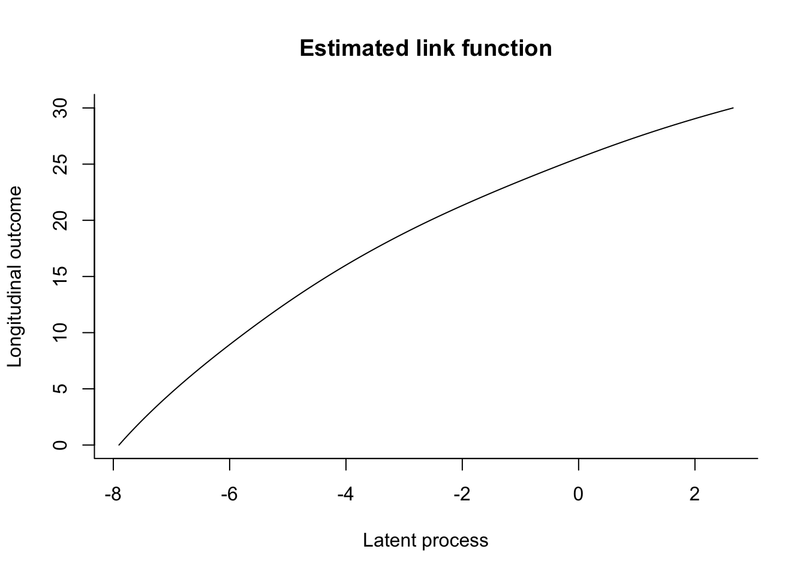
# Thresholds
# Especially for the threshold link function, we recommend to estimate
# models with increasing complexity and use estimates of previous ones
# to specify plausible initial values (we remind that estimation of
# models with threshold link function involves a computationally demanding
# numerical integration -here of size 3)
m15<-lcmm(Ydep2~Time+I(Time^2),random=~Time,subject='ID',ng=1
,data=data_lcmm,link="thresholds",maxiter=100,
B=c(-0.8379, -0.1103, 0.3832, 0.3788 , 0.4524, -7.3180, 0.5917, 0.7364,
0.6530, 0.4038, 0.4290, 0.6099, 0.6014 , 0.5354 , 0.5029 , 0.5463,
0.5310 , 0.5352, 0.6498, 0.6653, 0.5851, 0.6525, 0.6701 , 0.6670 ,
0.6767 , 0.7394 , 0.7426, 0.7153, 0.7702, 0.6421))Be patient, lcmm is running ...
The program took 70.07 seconds summary(m15)General latent class mixed model
fitted by maximum likelihood method
lcmm(fixed = Ydep2 ~ Time + I(Time^2), random = ~Time, subject = "ID",
ng = 1, link = "thresholds", data = data_lcmm, maxiter = 100)
Statistical Model:
Dataset: data_lcmm
Number of subjects: 300
Number of observations: 1678
Number of latent classes: 1
Number of parameters: 30
Link function: thresholds
Iteration process:
Convergence criteria satisfied
Number of iterations: 1
Convergence criteria: parameters= 2.5e-06
: likelihood= 5.5e-05
: second derivatives= 5.3e-08
Goodness-of-fit statistics:
maximum log-likelihood: -3971.85
AIC: 8003.7
BIC: 8114.82
Discrete posterior log-likelihood: -3971.85
Discrete AIC: 8003.7
Mean discrete AIC per subject: 13.3395
Mean UACV per subject: 13.3463
Mean discrete LL per subject: -13.2395
Maximum Likelihood Estimates:
Fixed effects in the longitudinal model:
coef Se Wald p-value
intercept (not estimated) 0
Time -0.83913 0.18322 -4.580 0.00000
I(Time^2) -0.10980 0.07429 -1.478 0.13940
Variance-covariance matrix of the random-effects:
intercept Time
intercept 0.38331
Time 0.37882 0.45229
Residual standard error (not estimated) = 1
Parameters of the link function:
(the following levels are not observed in the data: 2 3 4 5 6
so that the number of parameters in the threshold transformation is reduced to 25 )
coef Se Wald p-value
thresh. parm1 -7.31747 0.47070 -15.546 0.00000
thresh. parm2 0.59168 0.33974 1.742 0.08158
thresh. parm3 0.73582 0.21497 3.423 0.00062
thresh. parm4 0.65297 0.14759 4.424 0.00001
thresh. parm5 0.40392 0.13940 2.898 0.00376
thresh. parm6 0.42909 0.12066 3.556 0.00038
thresh. parm7 0.60985 0.09889 6.167 0.00000
thresh. parm8 0.60140 0.08007 7.511 0.00000
thresh. parm9 0.53533 0.07142 7.495 0.00000
thresh. parm10 0.50297 0.06476 7.767 0.00000
thresh. parm11 0.54621 0.05731 9.531 0.00000
thresh. parm12 0.53101 0.05024 10.570 0.00000
thresh. parm13 0.53522 0.04478 11.951 0.00000
thresh. parm14 0.64985 0.03981 16.325 0.00000
thresh. parm15 0.66526 0.03485 19.091 0.00000
thresh. parm16 0.58512 0.03148 18.590 0.00000
thresh. parm17 0.65253 0.02837 23.003 0.00000
thresh. parm18 0.67008 0.02593 25.845 0.00000
thresh. parm19 0.66703 0.02476 26.939 0.00000
thresh. parm20 0.67671 0.02437 27.768 0.00000
thresh. parm21 0.73938 0.02402 30.781 0.00000
thresh. parm22 0.74264 0.02526 29.394 0.00000
thresh. parm23 0.71529 0.02874 24.891 0.00000
thresh. parm24 0.77017 0.03553 21.675 0.00000
thresh. parm25 0.64207 0.04728 13.579 0.00000plot(m15,which="linkfunction",bty="l")
Warning: The above code chunk cached its results, but it won’t be re-run if previous chunks it depends on are updated. If you need to use caching, it is highly recommended to also set knitr::opts_chunk$set(autodep = TRUE) at the top of the file (in a chunk that is not cached). Alternatively, you can customize the option dependson for each individual chunk that is cached. Using either autodep or dependson will remove this warning. See the knitr cache options for more details.
#### Plot of estimated different link functions:
#### (applicable for models that only differ in the "link function" used.
#### Otherwise, the latent process scale is different and a rescaling
#### is necessary)
plot(m10,which="linkfunction",col=1,xlab="latent process",ylab="marker",
bty="l",xlim=c(-10,5),legend=NULL)
plot(m11,which="linkfunction",add=TRUE,col=2,legend=NULL)
plot(m12,which="linkfunction",add=TRUE,col=3,legend=NULL)
plot(m13,which="linkfunction",add=TRUE,col=4,legend=NULL)
plot(m14,which="linkfunction",add=TRUE,col=5,legend=NULL)
plot(m15,which="linkfunction",add=TRUE,col=6,legend=NULL)
legend(x="bottomright",legend=c("linear","beta","spl_3e","spl_5q","spl_5m","thresholds"),
col=1:6,lty=1,inset=.02,box.lty=0)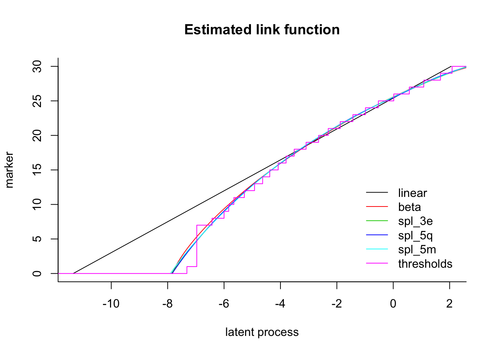
#### Estimation of 2-latent class mixed models with different assumed link
#### functions with individual and class specific linear trend
#### for illustration, only default initial values where used but other
#### sets of initial values should also be tried to ensure convergence
#### towards the golbal maximum
# Linear link function
m20<-lcmm(Ydep2~Time,random=~Time,subject='ID',mixture=~Time,ng=2,
idiag=TRUE,data=data_lcmm,link="linear",B=c(-0.98,0.79,-2.09,
-0.81,0.19,0.55,24.49,2.24))Be patient, lcmm is running ...
The program took 2.45 seconds summary(m20)General latent class mixed model
fitted by maximum likelihood method
lcmm(fixed = Ydep2 ~ Time, mixture = ~Time, random = ~Time, subject = "ID",
ng = 2, idiag = TRUE, link = "linear", data = data_lcmm)
Statistical Model:
Dataset: data_lcmm
Number of subjects: 300
Number of observations: 1678
Number of latent classes: 2
Number of parameters: 8
Link function: linear
Iteration process:
Convergence criteria satisfied
Number of iterations: 2
Convergence criteria: parameters= 1.5e-07
: likelihood= 1.3e-06
: second derivatives= 1.2e-10
Goodness-of-fit statistics:
maximum log-likelihood: -4061.88
AIC: 8139.76
BIC: 8169.39
Discrete posterior log-likelihood: -4036.05
Discrete AIC: 8088.09
Mean discrete AIC per subject: 13.4802
Mean UACV per subject: 13.4828
Mean discrete LL per subject: -13.4535
Maximum Likelihood Estimates:
Fixed effects in the class-membership model:
(the class of reference is the last class)
coef Se Wald p-value
intercept class1 -0.97956 0.38189 -2.565 0.01032
Fixed effects in the longitudinal model:
coef Se Wald p-value
intercept class1 (not estimated) 0
intercept class2 0.79049 0.26631 2.968 0.00299
Time class1 -2.08922 0.27103 -7.708 0.00000
Time class2 -0.81346 0.13339 -6.098 0.00000
Variance-covariance matrix of the random-effects:
intercept Time
intercept 0.18864
Time 0.00000 0.55495
Residual standard error (not estimated) = 1
Parameters of the link function:
coef Se Wald p-value
Linear 1 (intercept) 24.49109 0.46740 52.399 0.00000
Linear 2 (std err) 2.24229 0.04398 50.986 0.00000postprob(m20)
Posterior classification:
class1 class2
N 68.00 232.00
% 22.67 77.33
Posterior classification table:
--> mean of posterior probabilities in each class
prob1 prob2
class1 0.7985 0.2015
class2 0.1189 0.8811
Posterior probabilities above a threshold (%):
class1 class2
prob>0.7 66.18 85.78
prob>0.8 54.41 74.14
prob>0.9 41.18 62.50
# Beta link function
m21<-lcmm(Ydep2~Time,random=~Time,subject='ID',mixture=~Time,ng=2,
idiag=TRUE,data=data_lcmm,link="beta",B=c(-0.1,-0.56,-0.4,-1.77,
0.53,0.14,0.6,-0.83,0.73,0.09))Be patient, lcmm is running ...
The program took 3.17 seconds summary(m21)General latent class mixed model
fitted by maximum likelihood method
lcmm(fixed = Ydep2 ~ Time, mixture = ~Time, random = ~Time, subject = "ID",
ng = 2, idiag = TRUE, link = "beta", data = data_lcmm)
Statistical Model:
Dataset: data_lcmm
Number of subjects: 300
Number of observations: 1678
Number of latent classes: 2
Number of parameters: 10
Link function: Standardised Beta CdF
Iteration process:
Convergence criteria satisfied
Number of iterations: 3
Convergence criteria: parameters= 7.4e-07
: likelihood= 3e-05
: second derivatives= 2e-10
Goodness-of-fit statistics:
maximum log-likelihood: -3994.54
AIC: 8009.09
BIC: 8046.13
Discrete posterior log-likelihood: -3985.49
Discrete AIC: 7990.99
Mean discrete AIC per subject: 13.3183
Mean UACV per subject: 13.3174
Mean discrete LL per subject: -13.285
Maximum Likelihood Estimates:
Fixed effects in the class-membership model:
(the class of reference is the last class)
coef Se Wald p-value
intercept class1 -0.09650 0.22158 -0.435 0.66320
Fixed effects in the longitudinal model:
coef Se Wald p-value
intercept class1 (not estimated) 0
intercept class2 -0.56422 0.24360 -2.316 0.02055
Time class1 -0.39606 0.11528 -3.436 0.00059
Time class2 -1.77211 0.13371 -13.254 0.00000
Variance-covariance matrix of the random-effects:
intercept Time
intercept 0.52572
Time 0.00000 0.14307
Residual standard error (not estimated) = 1
Parameters of the link function:
coef Se Wald p-value
Beta1 0.59713 0.06486 9.206 0.00000
Beta2 -0.82702 0.08991 -9.198 0.00000
Beta3 0.73447 0.01833 40.069 0.00000
Beta4 0.09274 0.00434 21.390 0.00000postprob(m21)
Posterior classification:
class1 class2
N 138 162
% 46 54
Posterior classification table:
--> mean of posterior probabilities in each class
prob1 prob2
class1 0.8393 0.1607
class2 0.1663 0.8337
Posterior probabilities above a threshold (%):
class1 class2
prob>0.7 73.91 77.16
prob>0.8 67.39 60.49
prob>0.9 46.38 43.83
# I-splines link function (and 5 nodes at quantiles)
m22<-lcmm(Ydep2~Time,random=~Time,subject='ID',mixture=~Time,ng=2,
idiag=TRUE,data=data_lcmm,link="5-quant-splines",B=c(0.12,0.63,
-1.76,-0.39,0.51,0.13,-7.37,1.05,1.28,1.96,1.3,0.93,1.05))Be patient, lcmm is running ...
The program took 3.8 seconds summary(m22)General latent class mixed model
fitted by maximum likelihood method
lcmm(fixed = Ydep2 ~ Time, mixture = ~Time, random = ~Time, subject = "ID",
ng = 2, idiag = TRUE, link = "5-quant-splines", data = data_lcmm)
Statistical Model:
Dataset: data_lcmm
Number of subjects: 300
Number of observations: 1678
Number of latent classes: 2
Number of parameters: 13
Link function: Quadratic I-splines with nodes
0 21 24 26 30
Iteration process:
Convergence criteria satisfied
Number of iterations: 2
Convergence criteria: parameters= 2.7e-06
: likelihood= 3.4e-05
: second derivatives= 4.2e-08
Goodness-of-fit statistics:
maximum log-likelihood: -3992.38
AIC: 8010.76
BIC: 8058.91
Discrete posterior log-likelihood: -3983
Discrete AIC: 7991.99
Mean discrete AIC per subject: 13.32
Mean UACV per subject: 13.3175
Mean discrete LL per subject: -13.2767
Maximum Likelihood Estimates:
Fixed effects in the class-membership model:
(the class of reference is the last class)
coef Se Wald p-value
intercept class1 0.11993 0.20591 0.582 0.56026
Fixed effects in the longitudinal model:
coef Se Wald p-value
intercept class1 (not estimated) 0
intercept class2 0.62722 0.23425 2.678 0.00742
Time class1 -1.76180 0.12715 -13.856 0.00000
Time class2 -0.38973 0.10967 -3.554 0.00038
Variance-covariance matrix of the random-effects:
intercept Time
intercept 0.51154
Time 0.00000 0.12703
Residual standard error (not estimated) = 1
Parameters of the link function:
coef Se Wald p-value
I-splines1 -7.37438 0.51801 -14.236 0.00000
I-splines2 1.04709 0.29509 3.548 0.00039
I-splines3 1.27806 0.17474 7.314 0.00000
I-splines4 1.95670 0.04927 39.711 0.00000
I-splines5 1.30287 0.03782 34.447 0.00000
I-splines6 0.93180 0.06714 13.878 0.00000
I-splines7 1.05285 0.05806 18.133 0.00000postprob(m22)
Posterior classification:
class1 class2
N 162 138
% 54 46
Posterior classification table:
--> mean of posterior probabilities in each class
prob1 prob2
class1 0.8507 0.1493
class2 0.1534 0.8466
Posterior probabilities above a threshold (%):
class1 class2
prob>0.7 81.48 76.09
prob>0.8 65.43 67.39
prob>0.9 50.62 47.83
data <- data_lcmm[data_lcmm$ID==193,]
plot(predictL(m22,var.time="Time",newdata=data,bty="l"))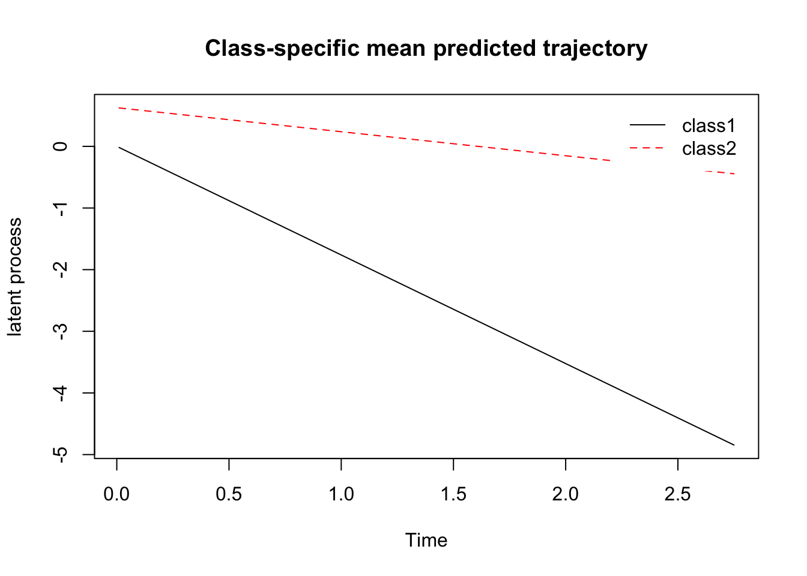
a new implementation of k-means for longitudinal data (or trajectories).
This is the example
library(kml3d)
### Generation of some data
cld1 <- generateArtificialLongData3d(15)
cld1 ~~~ Class: ClusterLongData3d ~~~
~ Sub-Class: LongData3d ~
~ idAll = [45] i1 i2 i3 i4 i5 i6 i7 i8 i9 i10 ...
~ idFewNA = [45] i1 i2 i3 i4 i5 i6 i7 i8 i9 i10 ...
~ varNames = [2] V T
~ time = [11] 0 1 2 3 4 5 6 7 8 9 ...
~ maxNA = [2] 9 9
~ reverse = [2x2]
- mean = 0 0
- SD = 1 1
~ traj = [45x11x2] (limited to 5x10x3) :
V :
t0 t1 t2 t3 t4 t5 t6 t7 t8 t9 more
i1 -2.06 -1.37 -2.48 -0.45 -2.50 -5.61 -1.24 -3.30 -2.26 -4.31 ...
i2 0.00 4.84 2.09 0.55 6.64 -0.10 5.90 2.32 5.24 -1.20 ...
i3 2.31 1.26 0.32 1.34 2.00 1.08 0.39 2.78 4.24 -4.35 ...
i4 0.16 -1.44 2.23 -0.64 -3.52 -0.46 -2.46 -1.36 -0.37 -0.83 ...
i5 -3.54 0.89 -0.66 0.38 -3.51 2.34 0.51 0.06 -2.28 0.11 ...
... ...
T :
t0 t1 t2 t3 t4 t5 t6 t7 t8 t9 more
i1 1.85 -3.90 -1.39 -0.35 -0.80 0.48 -3.26 0.45 -1.23 -1.11 ...
i2 -0.27 2.64 2.29 -1.29 1.27 3.67 1.74 2.23 2.34 -1.80 ...
i3 3.34 3.19 4.74 4.78 -0.45 1.77 1.71 -2.57 1.20 3.61 ...
i4 4.59 -1.36 1.54 0.16 2.77 4.75 6.94 0.78 1.25 2.63 ...
i5 -3.17 -4.00 -1.21 -7.00 -3.90 0.18 -1.59 -2.53 -3.02 -4.64 ...
... ...
~ Sub-Class: ListPartition ~
~ criterionActif = Calinski.Harabatz
~ initializationMethod =
~ sorted =
~ criterion values (Calinski.Harabatz):
<no Partition>### We suspect 2, 3, 4 or 5 clusters, we want 3 redrawing.
### We want to "see" what happen (so toPlot="both")
kml3d(cld1,2:5,3,toPlot="both") ~ Slow KmL3D ~************
S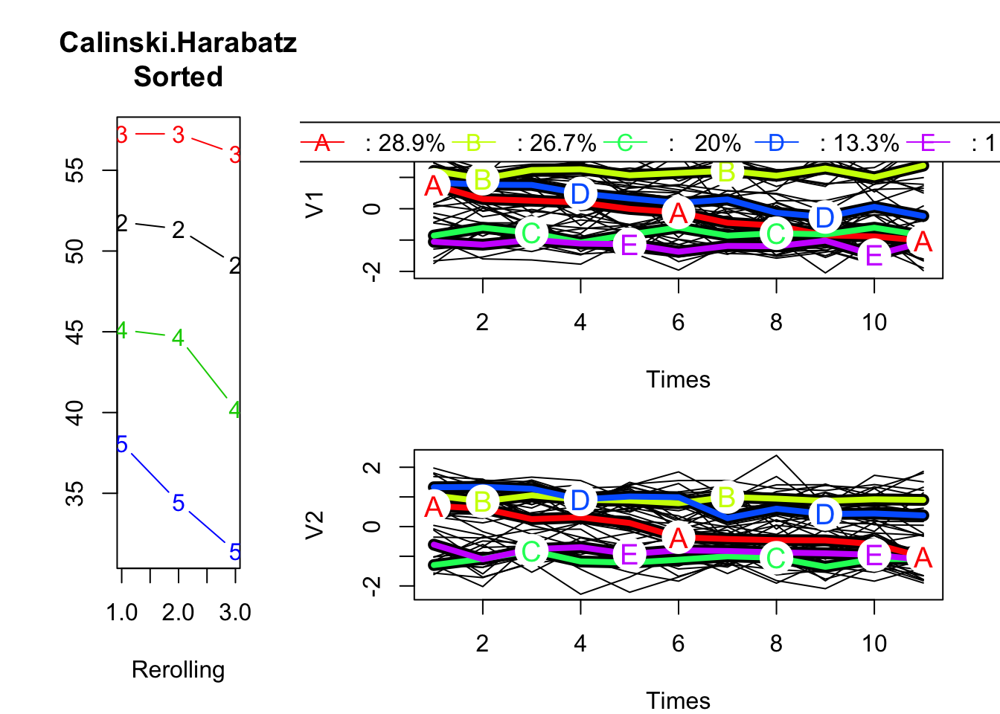
### 3 seems to be the best.
### We don't want to see again, we want to get the result as fast as possible.
### Just, to check the overall process, we plot the criterion evolution
kml3d(cld1,3,10,toPlot="criterion")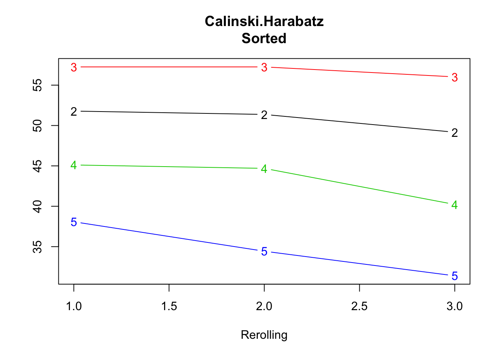
~ Fast KmL3D ~
*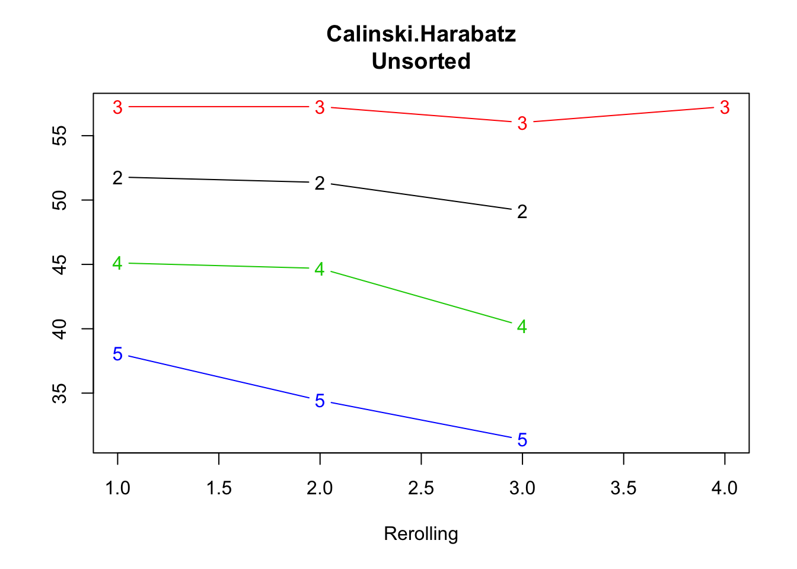
*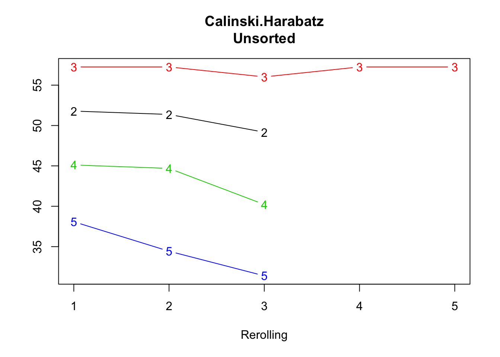
*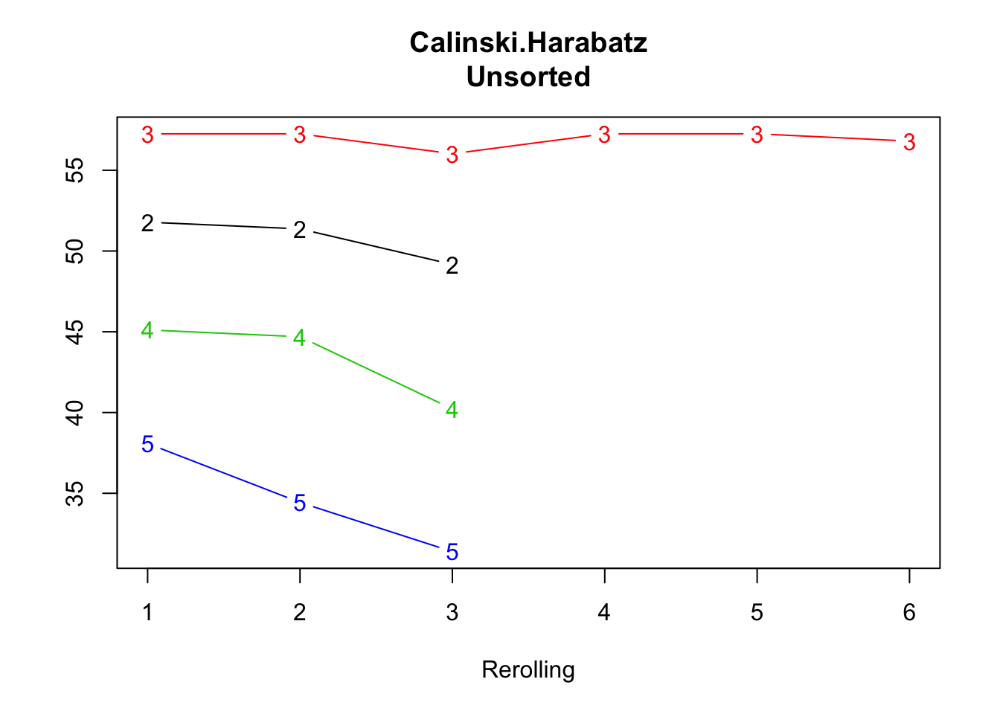
*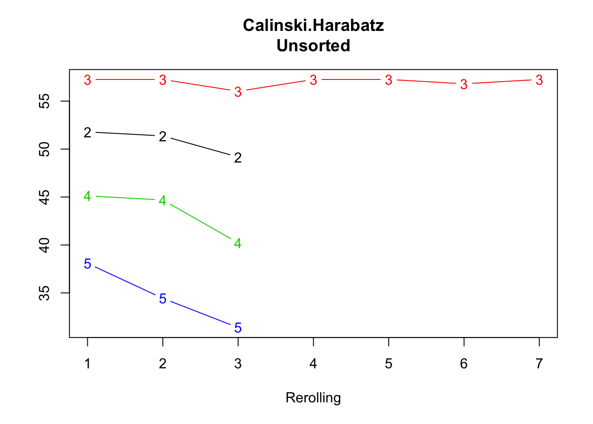
*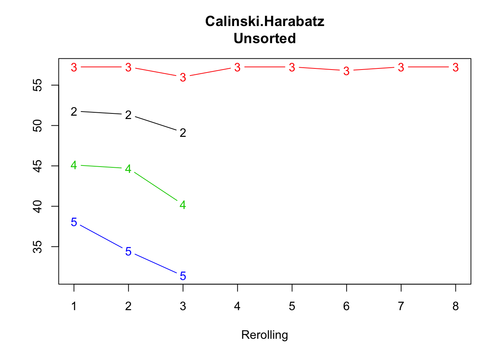
***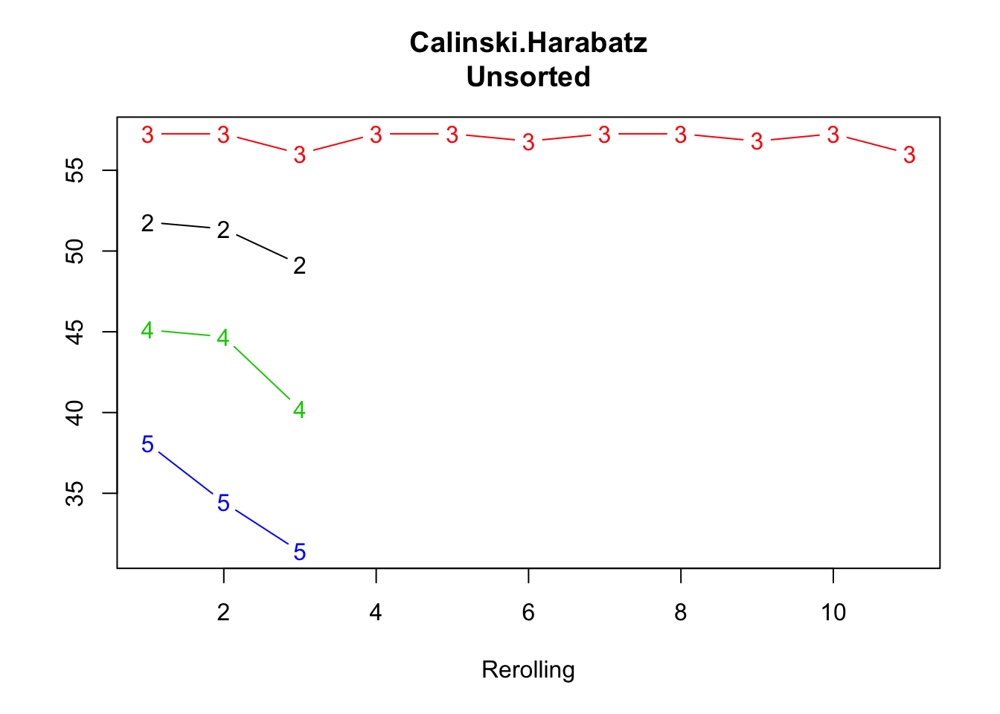
*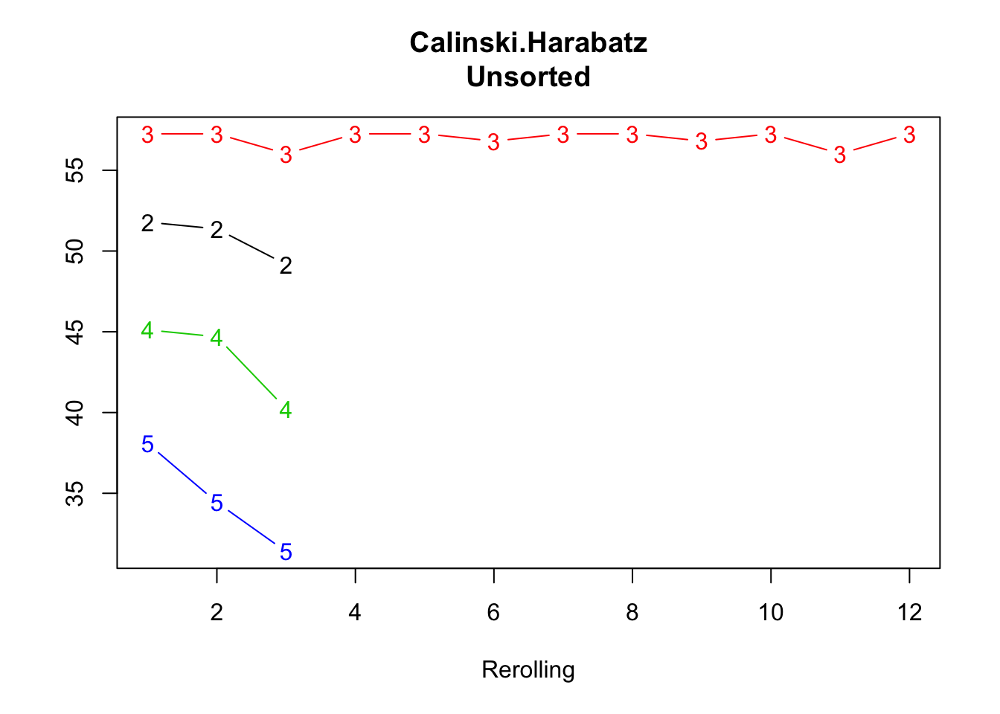
*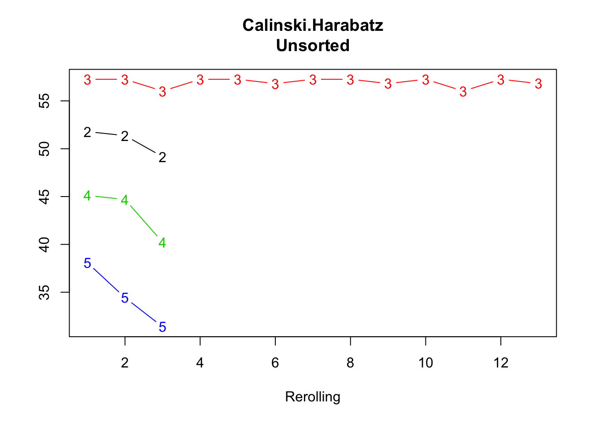
S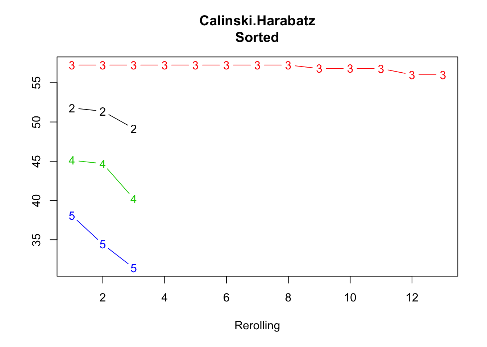
library(kml3d)
# NOT RUN {
### 1. Data Preparation
data(pregnandiol)
head(pregnandiol) id temperature1 pregnandiol1 temperature2 pregnandiol2 temperature3
1 I-1 36.8 1.78 36.4 2.84 37.0
2 I-2 36.8 1.34 36.8 1.36 36.7
3 I-3 NA 3.13 NA 1.17 NA
4 I-4 36.8 11.50 36.8 3.95 36.5
5 I-5 NA 17.90 NA 7.35 NA
6 I-6 NA NA NA 4.59 NA
pregnandiol3 temperature4 pregnandiol4 temperature5 pregnandiol5 temperature6
1 NA 37.0 2.38 36.5 2.02 36.3
2 1.67 36.7 0.61 36.6 0.69 36.7
3 1.13 NA 0.75 NA 0.41 NA
4 3.15 36.7 2.74 36.6 3.65 36.7
5 12.70 NA 3.23 36.3 6.08 36.8
6 3.08 36.9 3.63 36.8 3.38 36.5
pregnandiol6 temperature7 pregnandiol7 temperature8 pregnandiol8 temperature9
1 2.35 36.5 2.67 36.5 2.23 36.5
2 1.08 36.4 1.22 36.6 2.16 36.6
3 0.69 NA 0.88 36.5 0.70 36.5
4 3.38 36.7 3.94 36.7 3.54 36.4
5 4.83 36.5 7.68 36.6 3.02 36.5
6 3.06 36.6 4.02 36.5 2.33 36.4
pregnandiol9 temperature10 pregnandiol10 temperature11 pregnandiol11
1 2.16 36.5 3.05 36.6 3.03
2 0.87 36.5 1.09 36.7 2.43
3 0.77 36.5 0.27 36.6 0.72
4 3.18 36.6 11.40 36.6 2.29
5 2.33 36.3 6.71 36.7 2.20
6 1.86 36.4 1.62 36.5 2.33
temperature12 pregnandiol12 temperature13 pregnandiol13 temperature14
1 36.4 1.91 36.5 NA 36.6
2 36.5 1.66 36.5 2.04 36.5
3 36.6 0.65 36.7 1.56 36.6
4 36.5 2.35 36.6 1.90 36.5
5 36.7 8.65 36.7 2.59 36.1
6 36.4 2.45 36.5 1.66 36.4
pregnandiol14 temperature15 pregnandiol15 temperature16 pregnandiol16
1 2.89 36.7 3.44 36.9 4.02
2 1.04 36.5 2.43 36.6 1.32
3 1.08 36.8 3.21 36.8 1.56
4 3.10 36.5 2.93 36.6 2.26
5 7.68 36.5 12.60 36.5 1.63
6 1.57 36.5 1.90 36.6 2.10
temperature17 pregnandiol17 temperature18 pregnandiol18 temperature19
1 36.8 NA 36.5 4.61 36.9
2 36.4 0.76 36.4 1.80 36.3
3 36.9 2.75 36.8 10.80 36.9
4 36.8 2.84 36.8 6.59 36.7
5 36.5 2.23 36.3 2.13 37.0
6 36.5 2.08 36.6 2.98 36.9
pregnandiol19 temperature20 pregnandiol20 temperature21 pregnandiol21
1 14.20 36.9 14.40 36.8 16.20
2 0.73 36.5 1.83 36.5 2.87
3 6.52 36.9 5.35 37.0 6.65
4 7.50 36.7 6.17 36.6 9.51
5 21.40 36.7 12.40 36.6 13.90
6 2.14 37.0 4.68 36.9 12.80
temperature22 pregnandiol22 temperature23 pregnandiol23 temperature24
1 36.9 19.60 36.9 18.20 36.8
2 36.7 3.22 36.8 2.45 36.8
3 37.0 13.60 37.0 11.40 37.1
4 36.7 8.36 36.9 17.50 36.9
5 36.8 22.10 36.9 7.96 36.7
6 36.9 14.10 37.0 13.10 37.1
pregnandiol24 temperature25 pregnandiol25 temperature26 pregnandiol26
1 15.70 37.0 15.30 37.1 2.96
2 2.54 36.7 14.60 36.9 11.50
3 8.09 37.1 6.51 37.1 6.47
4 39.50 37.0 36.20 36.8 31.50
5 12.80 37.0 17.90 37.0 21.70
6 18.10 37.2 14.40 37.0 11.90
temperature27 pregnandiol27 temperature28 pregnandiol28 temperature29
1 37.3 2.06 37.0 1.94 NA
2 36.8 17.80 37.0 12.90 37.0
3 37.0 1.59 36.9 0.94 NA
4 36.8 34.30 36.9 30.30 36.8
5 37.0 19.00 36.9 19.80 36.7
6 NA 9.93 37.1 17.60 37.1
pregnandiol29 temperature30 pregnandiol30
1 NA NA NA
2 14.1 36.9 18.2
3 NA NA NA
4 12.0 37.0 10.0
5 19.3 NA NA
6 3.7 NA NAnames(pregnandiol) [1] "id" "temperature1" "pregnandiol1" "temperature2"
[5] "pregnandiol2" "temperature3" "pregnandiol3" "temperature4"
[9] "pregnandiol4" "temperature5" "pregnandiol5" "temperature6"
[13] "pregnandiol6" "temperature7" "pregnandiol7" "temperature8"
[17] "pregnandiol8" "temperature9" "pregnandiol9" "temperature10"
[21] "pregnandiol10" "temperature11" "pregnandiol11" "temperature12"
[25] "pregnandiol12" "temperature13" "pregnandiol13" "temperature14"
[29] "pregnandiol14" "temperature15" "pregnandiol15" "temperature16"
[33] "pregnandiol16" "temperature17" "pregnandiol17" "temperature18"
[37] "pregnandiol18" "temperature19" "pregnandiol19" "temperature20"
[41] "pregnandiol20" "temperature21" "pregnandiol21" "temperature22"
[45] "pregnandiol22" "temperature23" "pregnandiol23" "temperature24"
[49] "pregnandiol24" "temperature25" "pregnandiol25" "temperature26"
[53] "pregnandiol26" "temperature27" "pregnandiol27" "temperature28"
[57] "pregnandiol28" "temperature29" "pregnandiol29" "temperature30"
[61] "pregnandiol30"cld3dPregTemp <- cld3d(pregnandiol,timeInData=list(temp=1:30*2,preg=1:30*2+1))
### 2. Building "optimal" clusteration (with only 2 redrawings)
### Real analysis needs at least 20 redrawings
kml3d(cld3dPregTemp,3:5,nbRedrawing=2,toPlot="both") ~ Slow KmL3D ~******
S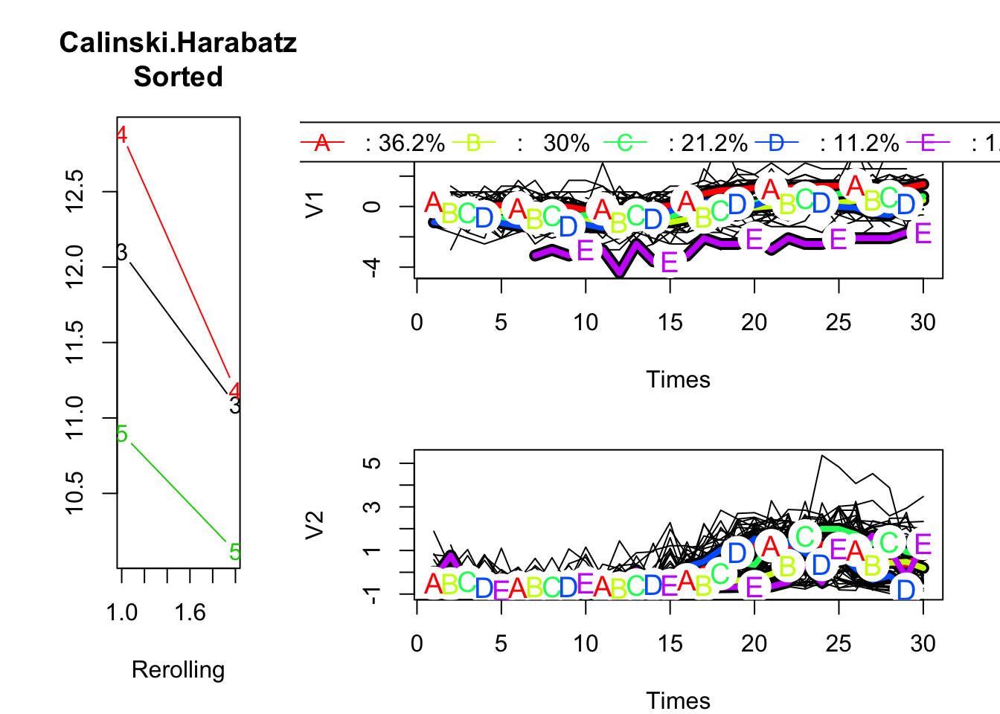
### 3. Exporting results
try(choice(cld3dPregTemp))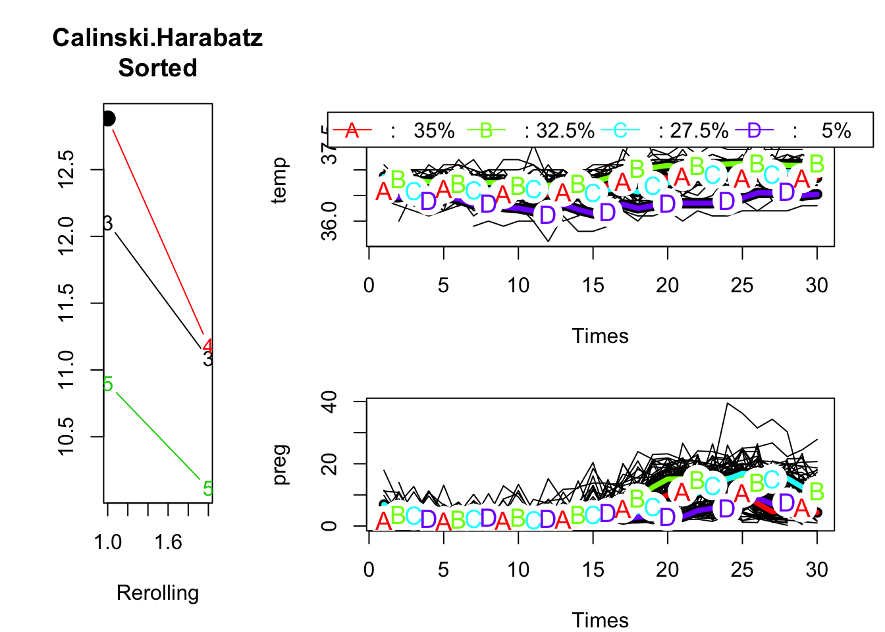
Choix : class : NULL length : 0
Error in switch(EXPR = choix, Up = { : EXPR must be a length 1 vector### 4. Visualizing in 3D
plotMeans3d(cld3dPregTemp,4)
# }
sessionInfo()R version 3.5.1 (2018-07-02)
Platform: x86_64-apple-darwin15.6.0 (64-bit)
Running under: macOS High Sierra 10.13.6
Matrix products: default
BLAS: /Library/Frameworks/R.framework/Versions/3.5/Resources/lib/libRblas.0.dylib
LAPACK: /Library/Frameworks/R.framework/Versions/3.5/Resources/lib/libRlapack.dylib
locale:
[1] en_US.UTF-8/en_US.UTF-8/en_US.UTF-8/C/en_US.UTF-8/en_US.UTF-8
attached base packages:
[1] stats graphics grDevices utils datasets methods base
other attached packages:
[1] kml3d_2.4.2 kml_2.4.1 longitudinalData_2.4.1
[4] misc3d_0.9-0 rgl_0.106.8 clv_0.3-2.2
[7] class_7.3-15 cluster_2.0.7-1 lcmm_1.8.1
[10] survival_3.1-8
loaded via a namespace (and not attached):
[1] Rcpp_1.0.0 later_1.2.0 pillar_1.6.0
[4] compiler_3.5.1 git2r_0.24.0 highr_0.7
[7] workflowr_1.2.0 tools_3.5.1 digest_0.6.27
[10] jsonlite_1.7.2 evaluate_0.13 lifecycle_1.0.0
[13] tibble_3.1.1 lattice_0.20-38 pkgconfig_2.0.2
[16] rlang_0.4.10 Matrix_1.2-15 shiny_1.6.0
[19] crosstalk_1.1.1 yaml_2.2.0 xfun_0.22
[22] fastmap_1.1.0 stringr_1.4.0 knitr_1.32
[25] htmlwidgets_1.5.1 fs_1.5.0 vctrs_0.3.7
[28] manipulateWidget_0.11.0 rprojroot_1.3-2 grid_3.5.1
[31] glue_1.3.2 R6_2.4.0 fansi_0.4.0
[34] tcltk_3.5.1 rmarkdown_1.11 magrittr_2.0.1
[37] whisker_0.3-2 promises_1.2.0.1 backports_1.1.3
[40] codetools_0.2-16 ellipsis_0.3.0 htmltools_0.5.1.1
[43] splines_3.5.1 xtable_1.8-4 mime_0.6
[46] httpuv_1.6.1 utf8_1.1.4 miniUI_0.1.1.1
[49] stringi_1.3.1 crayon_1.4.1